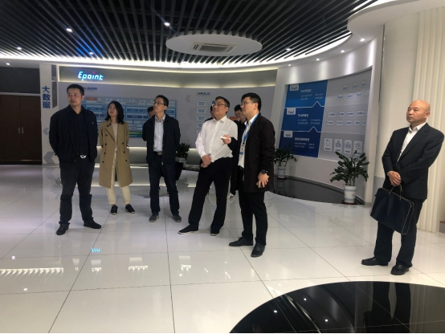
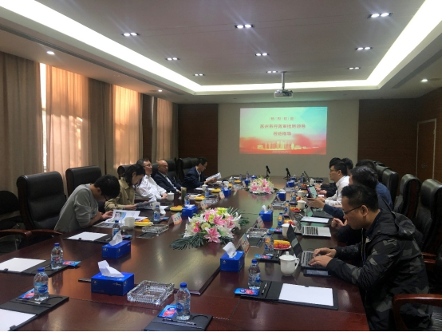

【信息发布时间：2020-11-05阅读次数：】 【我要打印】 【关闭】
10月29日下午，市行政审批局副局长张硕群带队前往国泰新点软件股份有限公司调研，国泰新点专注于智慧城市中的智慧招采、智慧政务、数字建设等领域，公司相关负责人陪同调研。

张局长一行首先实地参观了国泰新点办公场所和展厅，了解公司建设发展历程、规模现状和所获得的荣誉，详细听取公司的平台建设和业务内容，以及行业发展动态。随后双方就“互联网+公共资源交易”发展的新思路、新模式进行了深入沟通交流。

张局长表示，国泰新点的平台在公共资源交易领域应用广泛，使用效果较好，接下来在电子保函、集中采购等方面双方应更进一步对接交流，提出解决方案，更好的推进公共资源交易创新发展。